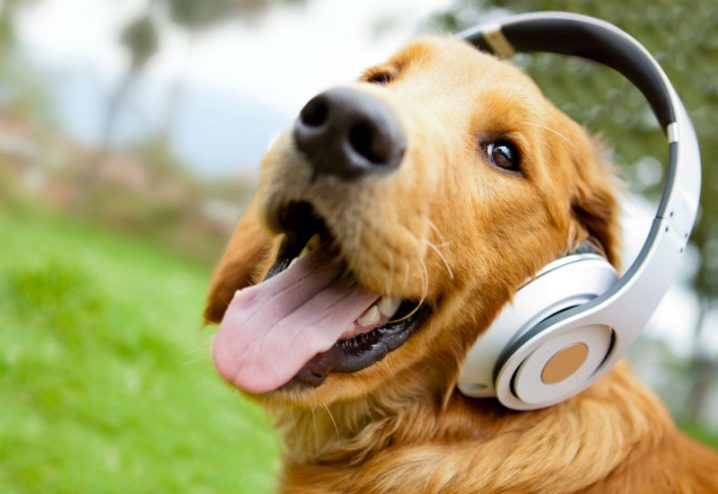

Cabeçalho
Dados
Nome: Fernando Pessoa
Idade: 53
Hobby: Passear com animais
Profissão: Fotógrafo Canino

- Clientes
- Mario gerson
- Joao maria
- Ana Banana
- Raul Gilson
- Fausto silvao
- Telefone de contato
- (47)9999-9999
- Email: Fernado.Pessoa@gmail.com
Texto explicativo da profissão
Quando a empresário Fernando Pessoa descobriu que existia em São Paulo um fotógrafo especializado em pets
encomendou
logo uma sessão de fotos para a yorkshire Pink.
Foram tantos clique que hoje a cadelinha é uma "dog model". "Eu
tenho assim um orgulho dela, fico super feliz com o trabalho, nunca imaginei nem ter uma yorkshire, muito menos
que
ela se tornasse uma modelo", afirma.
De cliente, ela virou parceira do fotógrafo Fernando Pessoa. Fotógrafo há mais de 50 anos, há 18 mudou para o
segmento
pet. Conhecido antigamente por fotografar celebridades no Brasil, o profissional trocou os famosos pelos modelos
de
quatro patas. "É diferente, tem que ser muito paciente, calmo, procurar climas, lugares de muita tranquilidade
para
transmitir o melhor para os animais e principalmente o amor", explica.
{kind=link}